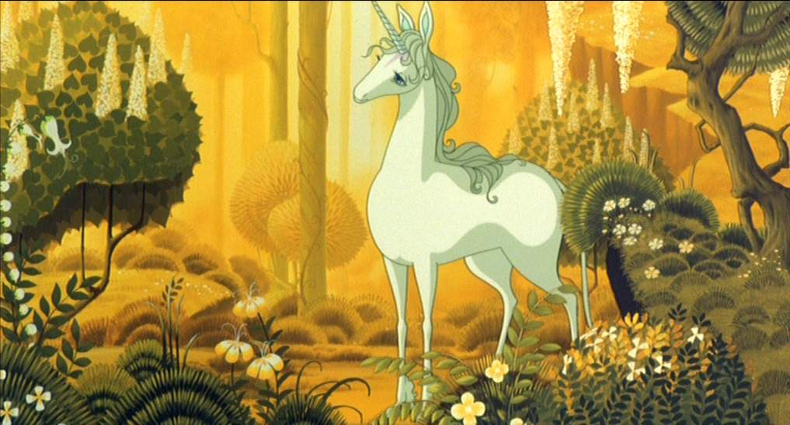

"We're going to set you on track to blow your own mind."
- Shereef Bishay
When I was a six years old, I wanted to be a Unicorn when I grew up.
"What do you want to be when you grow up?" is a surprisingly common question to ask 6-year-olds If you ask me. I mean, these are individuals who know very little about the career opportunities available to them. Anyhow, over the next sixteen years, my one-horned dream dissolved into a rainbow-infused puddle of indecisiveness.
Recently, I've reconsidered that epic dream of unicornhood. I mean, what is a unicorn, exactly?
Turns out, for the past week, I'm pretty sure I've been in a virtual room full of unicorns at Dev Bootcamp. Here's why.
Unicorns are passionate.
We're in the Kitchen. THIS IS OUR KITCHEN. We make this kitchen-made soup. As Shereef hypes, I'm beyond excited to crush some knowledge with a group of people who take ownership of their learning and are invested in diving into a new, extra-magic code-filled world togather.
Unicorns explode with communal magical power when they're around other unicorns.
True to Shereef's commitment to humbleness, I'm super inspired by how open my peers at Dev Bootcamp are about what they don't know to people they don't know (yet!). They gain energy through the knowledge that they are not alone. After all, nobody wants to be The Last Unicorn.
Unicorns can fly when they really need to.
"Clearly, we'd all jumped off a cliff," Shereef muses over his first DBC cohort. But, guess what? They're all totally fine. We'll be fine too.
Because we're unicorns, and we've finally decided what we want to be when we grow up. I think my mind might be prematurely blown.